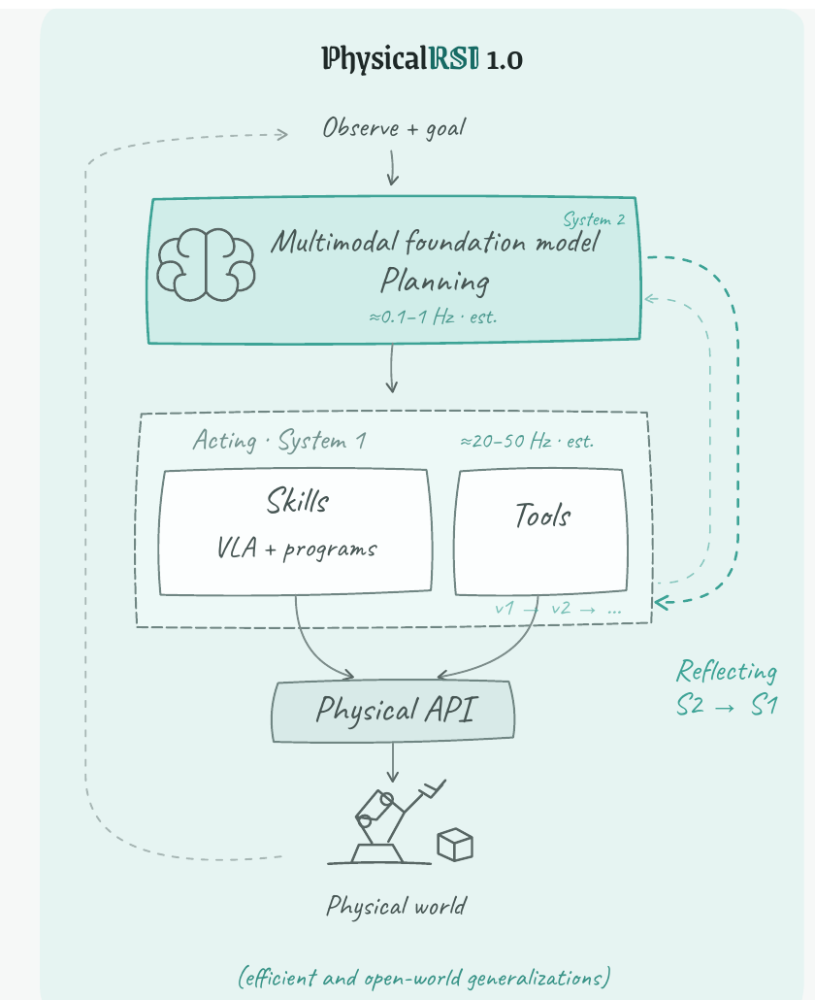
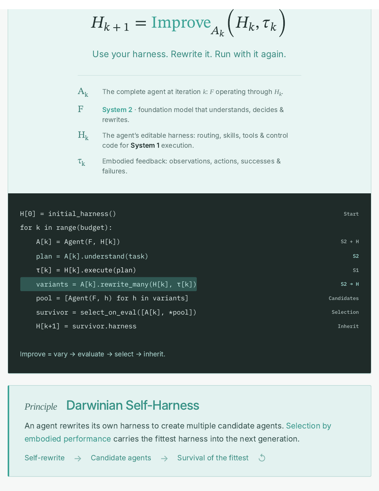
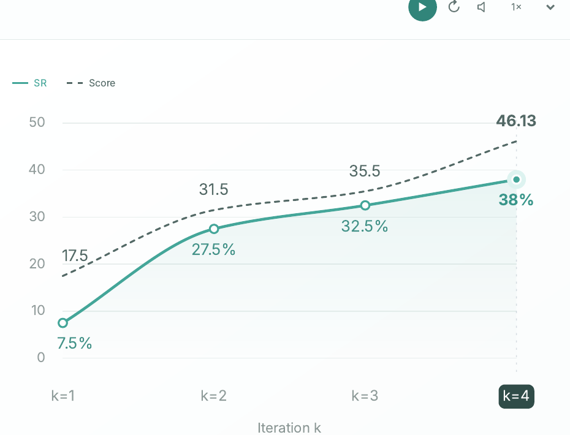

Academic Project Analysis · 2026
PhysicalRSI 1.0：不改模型权重，改写机器人如何行动
1. 研究背景与动机
机器人基础模型正在沿两条路线扩展能力。一条把多模态大模型直接当策略：语义推理强，但动作频率低、调用成本高，难以承担连续控制。另一条使用 VLA 或 World-Action Model：推理更快，却容易在长序列中累积误差，并在新对象、新布局和需要显式记忆的任务上遭遇分布外状态。
常见改进方式是重新训练模型或追加数据，但这会把每次失败都转化为昂贵的参数更新。PhysicalRSI 提出另一种载体：基础模型 $F$ 可以保持不变，真正被修改的是代理外围的 harness $H$。这里的 harness 不是单一提示词，而是 System 1 执行时依赖的路由、状态记忆、程序化技能、工具接口、控制守卫和组合关系。
这一选择让改进变得可见、可版本化、可回滚。一次“插钥匙失败”可以被转写为显式的 approach—align—insert 三阶段控制；一次“遮挡后忘记方块位置”可以被转写为对象—杯子对应表；一次“交换两个 T 形物体失败”可以增加缓冲位姿。改进结果不必等待神经网络吸收，而可以直接成为下一轮可执行结构。
项目将这种过程称为 Recursive Self-Harness：代理执行自己的 harness，读取成功与失败轨迹，生成多个修改版本，在独立评估上比较，然后继承最优版本。递归发生在“可执行代理结构”而不是模型参数中，因此它更接近带具身反馈的软件演化与经验编译。
“Use your harness. Rewrite it. Run with it again.”PhysicalRSI 项目页，Main Algorithm
论文式地看，核心假设是：许多开放世界操作失败并不要求重新学习整个动作分布，而可以通过显式状态、技能组合、工具选择与局部控制规则修复。RoboDojo 的记忆、精密操作、开放指令、泛化和长时任务提供了一个检验这一假设的多维试验场。
2. 方法详解
2.1 System 2 规划，System 1 高频执行
完整代理记为 $\mathcal A_k=\mathrm{Agent}(F,H_k)$。$F$ 是负责理解、规划与改写的多模态基础模型，$H_k$ 是第 $k$ 轮可编辑 harness。项目页把 System 2 的估计频率画为约 0.1–1 Hz，把 System 1 的技能与工具执行画为约 20–50 Hz。这里的频率是设计示意，不应视为严格基准。

对控制时刻 $t$，执行层读取当前观测 $o_t$、目标 $g$、回合状态 $m_t$、技能库 $S$ 与工具集 $T$，产生动作并更新状态：
直观：基础模型不需要在每个伺服周期重新思考；harness 把高层决定落实为持续可执行的技能、工具调用与状态更新。
2.2 具身反馈驱动 harness 改写
第 $k$ 轮执行得到轨迹 $\tau_k$，其中包含观测、动作、成功、失败和测量结果。System 2 使用当前 harness 与轨迹生成改进：
直观：系统不把失败只当作一个负分，而是把它当作对程序结构的编辑请求：缺少什么状态、应增加哪个守卫、哪段技能需要拆分、何时切换工具。
在最小实现中，正负证据分别写作 $E_k^+$ 与 $E_k^-$，改写由基础模型产生：
这并不意味着模型生成的任何代码都能直接继承。项目页的核心循环是多候选生成、评估、选择与继承；官方仓库进一步加入冻结候选池、证据哈希、成对比较和版本谱系，使“自我修改”成为受限开发流程。
2.3 Darwinian Self-Harness：变异、评估、选择、继承

“vary → evaluate → select → inherit”PhysicalRSI 项目页，对 Improve 的定义
若候选集合为 $\mathcal C_k=\{H_k,H_k^{(1)},\ldots,H_k^{(J)}\}$，在冻结评估集合 $\mathcal V_k$ 上的选择可抽象为：
直观：父代也进入候选池；只有新版本在预先声明的评估协议上胜过父代，修改才被继承。这比“生成一次代码就覆盖旧版本”多了一层实验选择。
项目页称之为 Darwinian Self-Harness，因为一个父代产生多个候选代理，具身表现决定谁进入下一代。这个类比的技术对应不是自然选择本身，而是显式的版本变异、同批评估与幸存者保留。
“Survival of the fittest”PhysicalRSI 项目页，Darwinian Self-Harness
2.4 四种可修改结构：表示、状态、规划与控制
表示（representation）把原始视觉转成任务结构。例如最大数字排列需要定位数字、按数值排序并映射到目标槽位，可写为 $\sigma=\operatorname{argsort}(d,\downarrow)$ 与 $p_i^*=p_0+i\Delta x\hat e_x$。与仅凭 VLA 动作先验相比，harness 明确保存符号顺序与空间槽位的对应。
状态（state）处理遮挡与跨时刻依赖。遮盖方块任务先建立 $m=\{c_i\mapsto p_i\}$，记录物体身份 $c_i$ 与杯子位置 $p_i$；当目标颜色不可见时，系统查询 $p_{\mathrm{target}}=m(c_{\mathrm{goal}})$。状态并非模型隐式上下文，而是可读写的回合记忆。
规划（planning）把几何约束转成显式序列。交换两个物体不能直接互换占据位置，因此使用空缓冲位姿 $T_{\mathrm{buf}}$：$T_A\to T_{\mathrm{buf}}$、$T_B\to T_A$、$T_{\mathrm{buf}}\to T_B$，并在每段保持目标朝向。
控制（control）把连续交互拆成可验证阶段。插钥匙任务要求位置误差与旋转误差同时满足阈值：
直观：先 approach，再 align，最后 insert；每个阶段都能用局部几何守卫判断是否继续或重试，而不是一次开放环动作完成全部过程。
2.5 技能继承与组合
PhysicalRSI 不只在同一任务内修补技能，还允许把已经验证的模块迁移到新任务。若任务 A 的视觉接地模块 $\phi_A$ 可复用到任务 B，则令 $\phi_B\equiv\phi_A$，再与抓取、对齐和插入技能组合：
任务级 harness 也可表示为技能序列 $H_\tau=\operatorname{Seq}(\sigma_1,\ldots,\sigma_L)$。项目页展示 212 个记录片段、覆盖 40 个任务，强调技能库既是执行资源，也是改写时可搜索和重组的结构空间。
3. 开源实现：项目页算法如何落到代码
官方仓库将概念架构拆为能力域、Self-Harness 核心和基础设施。docs/architecture.md 说明：PhysicalRSI/Embodied_Harness 管理 Memory、Tool 与 Skill，PhysicalRSI_core 管理改进循环、证据和谱系。每个能力以带名字、版本、输入输出、调用与副作用集合的 Operation 暴露；串行组合要求相邻契约完全匹配，坐标系或单位转换必须显式化。
3.1 rollout 证据不是调用者可随意提交的 JSON
PhysicalRSI_core/self_harness/rollout.py 的 read_development_evaluations 会从磁盘重新装载 development trial，校验父 harness 的 SHA256、评估器版本、计划覆盖、canonical 路径和每个证据文件哈希。调用者提供的摘要必须与真实保存的回合逐项一致，重复 run、替换 trace 或把验证集结果伪装成开发反馈都会被拒绝。
PhysicalRSI_core/self_harness/rollout.py
values = read_development_evaluations(parent, feedback, output)
if values != feedback["evaluations"]:
raise ValueError("Development evaluation differs from verified rollout")
这段设计支持一个关键边界：System 2 可以读取开发证据提出修改，但核心不会把未绑定、过期或来自其他 split 的轨迹交给 evolver。项目页简化为“观察失败并改写”，源码则把证据归属纳入正确性条件。
3.2 幸存者选择要求完整的成对评估
PhysicalRSI_core/self_harness/selection.py 的 select_survivor 先验证候选池、父代、任务权重、分数范围、最小增益和回归上限，再要求验证布局在候选池冻结后生成。所有候选必须使用完全相同的任务—布局对与评估器身份；缺失回合、重复几何、运行错误或证据变化会使选择无效，而不是被静默计为零分。
PhysicalRSI_core/self_harness/selection.py
pool = comparison["candidates"]
if len(results) != len(pool):
raise ValueError("Missing, duplicate or unexpected candidate result")
# parent remains unless a child clears the declared gain and regression gates
因此，源码中的“优胜劣汰”比项目页伪代码更保守：父代默认保留，子代必须越过预声明增益门槛，同时不能在关键任务上发生过量回归。可选的 paired-Hoeffding 规则还能限制多重比较预算。
3.3 完成程序不等于完成任务
PhysicalRSI_core/experiments.py 把一次实验拆成 reset、step、verify，并将 success、failure、uncertain、invalid 与 interrupted 区分。运行时保存 experiment.json、reset.json、trajectory.json 与 verdict.json，receipt 再绑定各文件哈希。这避免把“进程正常退出”误判为“机器人任务成功”。
4. 实验与证据分析
4.1 RoboDojo 评估口径
项目主要报告 RoboDojo-Sim 结果，覆盖 Memory、Precision、Open、Generalization 与 Long-Horizon 五个维度。Success Rate（SR）要求整条任务成功；Score 是基准的阶段性进度分。两者不可混用：高 Score 可能表示完成多个中间阶段，但最终任务仍失败。
截至项目页标注的 2026-10-08，PhysicalRSI 在 54 个模型的官方 overall 排名中以 Score 36.27 位列第 1，overall SR 为 31.38%。这表示它在当时排行榜的综合进度最好，不表示 68.62% 的失败已被解决，也不构成相对每个模型的受控实验。
| 方法 | Memory SR | Precision SR | Open SR | Generalization SR | Long-Horizon SR | Overall SR | Score |
|---|---|---|---|---|---|---|---|
| PhysicalRSI | 46.6 | 32.5 | 24.9 | 15.6 | 37.3 | 31.38 | 36.27 |
| Awomo-0.5 | 41.2 | 33.5 | 22.9 | 23.8 | 26.8 | 29.64 | 35.34 |
| GPT-6 Astra | 38.7 | 4.0 | 31.0 | 30.5 | 8.2 | 22.48 | 28.97 |
| $\pi_{0.5}$ | 4.7 | 5.5 | 1.7 | 8.2 | 14.7 | 6.93 | 11.44 |
维度表揭示了总体名次掩盖的结构：PhysicalRSI 在记忆与长时任务上优势明显，符合显式状态和技能序列的设计；但 Generalization SR 只有 15.6%，低于 Awomo-0.5 和 GPT-6 Astra，Open SR 也不是最高。它证明了 harness 路线的竞争力，而不是解决了所有开放世界泛化问题。
4.2 任务级结果：强项与零成功任务同时存在
| 任务 | 维度 | SR | Score | 解读 |
|---|---|---|---|---|
| cover blocks | Memory | ≈100% | ≈100.00 | 对象—杯子对应记忆直接匹配任务结构 |
| play tic tac toe | Long-Horizon | 94% | 98.33 | 离散状态与规则适合程序化 harness |
| swap T | Memory | ≈93% | ≈93.00 | 缓冲位姿规划显式解决占位冲突 |
| solve equation | Open | 60% | 60.00 | 符号求解与空间按键组合有效 |
| fold clothes | Generalization | 41% | 48.80 | 需要状态记忆与接触调整，仍有较大失败率 |
| hang mugs | Generalization | 0% | 8.80 | 有阶段进展但无整任务成功 |
| make toast | Generalization | 0% | 6.00 | harness 未跨过最终成功门槛 |
带“≈”的值是项目页根据可用官方任务表估算的均值，不应与官方 overall 等价。任务结果说明，PhysicalRSI 在状态可枚举、规则可程序化、技能边界清晰的任务上最强；对接触丰富、视觉变化大或需要连续精细调整的任务，程序结构并不能自动补足感知和低层控制。
4.3 跨轮次曲线能证明什么？

曲线展示四个被选中的开发评估点：SR 为 7.5%、27.5%、32.5%、38%，Score 为 17.5、31.5、35.5、46.13。它与“修改 harness 可累积改进”的机制一致，也展示了得分提升快于整任务成功率的现象。
4.4 消融证据仍不充分
当前页面没有系统地把“基础模型 + VLA”“固定 harness”“只加记忆”“只加代码技能”“完整递归选择”放在同一训练与评估预算下逐项消融。排行榜比较证明最终系统有竞争力，却无法分离收益来自更强的任务工程、更多开发回合、技能库覆盖、稀疏记忆，还是递归选择机制本身。
5. 讨论
最重要的思想是把“学习载体”从参数扩展到可执行结构。神经策略适合吸收连续感知—动作规律，harness 则适合保存任务状态、几何守卫、符号规则和技能组合。PhysicalRSI 不是否定 VLA，而是把 VLA 作为 System 1 的一种技能，与程序和工具共同置于可改写运行时中。
递归改写的真正难点是验证，而不是生成。让模型修改代码并不困难；困难的是证明新版本在新布局上更好、没有破坏已有能力、证据未被替换、评估过程与候选身份一致。官方源码在这些位置投入大量校验逻辑，说明“可审计的自我改进”比项目页的简洁伪代码复杂得多。
适用边界由任务可结构化程度决定。显式记忆、符号处理、离散阶段和可检测完成条件越清楚，harness 越能发挥优势。若任务依赖细腻触觉、不可观测形变或高速动态，System 2 写出的规则仍受 System 1 感知与控制上限约束。代码可以组织能力，不能凭空创造可靠的状态估计和运动技能。
6. 局限分析
6.1 项目方明确的边界
官方 README 将当前发布称为 preview，并把更易构建的任务/环境适配器、更多可执行技能库、简化数据合成与持续训练、跨任务/仿真器/机器人形态的可复现实验列为后续工作。架构文档还明确指出，机器人 SDK 与部署在仓库之外；现有接口的存在不能自动证明物理成功或 physical qualification。
基础设施也有明确缺口：分布式调度、动态 batching 和跨进程 GPU 分配不在当前 preview 范围内。可选模型将自然语言转成受限工具调用，但对话状态不是能力版本真值；这意味着工程系统刻意将“聊天代理说自己完成了”与“证据和谱系确认完成”分离。
6.2 独立判断
第一，项目目前缺少传统论文的作者列表、相关工作、完整实验协议、统计检验和同行评审文本。网页很丰富，却会持续更新；排行榜日期、模型数量、源码能力和估算任务值都可能漂移。严谨引用应固定页面日期、代码 commit 与结果快照。
第二，PhysicalRSI 的 headline 是 RoboDojo-Sim 排名，不能由名称中的 “Physical” 推断已在真实机器人上完成同等规模验证。页面中的视频和技能片段是展示性证据；没有与仿真同口径的真实世界成功率表，也没有 sim-to-real 误差分析。
第三，候选生成与任务工程成本未统一核算。System 1 执行可以减少昂贵的每步大模型调用，但 System 2 的代码生成、调试、多候选评估、环境复位和人工定义 verifier 仍会消耗时间与算力。没有端到端成本表时，不能把低在线调用频率直接等同于整体成本降低。
第四，benchmark contamination 与任务特化需要更强控制。harness 天然允许为任务写专用程序；这正是其能力来源，也可能把评估题目的规则编码进技能。要证明开放世界自我改进，需要在隐藏任务、隐藏布局和冻结开发预算上比较，并记录每个候选看到过哪些反馈。
第五，当前结果没有给出多次独立演化运行的方差。一次成功的谱系可能依赖特定模型输出与搜索路径；未来应报告不同随机种子、不同 foundation model、相同验证预算下的幸存率、回归率和谱系长度。
7. 结论
PhysicalRSI 1.0 提出一种清晰的具身 RSI 路线：冻结基础模型参数，把记忆、工具、技能、路由和控制代码组织为可编辑 harness；从真实执行证据生成多个候选，在新输入上评估，选择并继承更好的版本。它在 RoboDojo-Sim 上取得 Score 36.27、SR 31.38% 的项目页官方结果，尤其展示了显式记忆和长时技能组合的价值。
这项工作的说服力一半来自项目页方法与广泛任务展示，另一半来自开源 preview 对证据、版本、评估和回滚的工程约束。尚缺的则是稳定论文版本、系统消融、真实机器人规模验证、完整成本核算与多次独立演化统计。
来源与口径
本文依据 PhysicalRSI 项目页、官方 GitHub 仓库、RoboDojo/XPolicyLab 基线链接与页面内结果记录整理，核验日期为 2026-10-13。项目页的官方 overall 数值与任务估算值已分别标注；源码分析对应官方仓库当前 main 分支，后续版本可能变化。